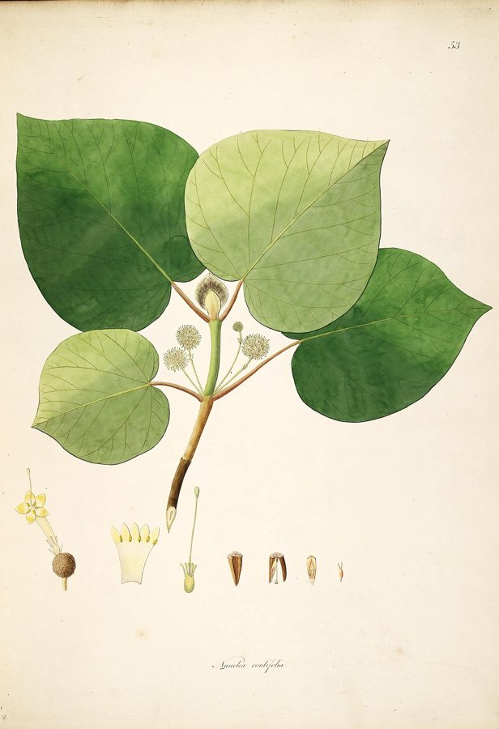

हल्दूHaldu
Haldina cordifolia · Bignoniaceae · FLR-0160

- Scientific nameवैज्ञानिक नाम
- Haldina cordifolia (Roxb.) Rideout
- Familyकुल
- Bignoniaceae
- Hindiहिंदी
- हल्दू
- Local namesस्थानीय नाम
- haldu, halda, haldua, haldu tree, yellow teak
- Status hereयहाँ की स्थिति
- native
- Movementआवागमन
- Resident, here all year
- IUCNIUCN
- not evaluated
- Reviewसमीक्षा
- audited and independently read
When to look कब देखें
Present all year.साल भर मौजूद।
Uses and possibilities उपयोग और संभावनाएँ
“Traditional medicine” means a documented traditional use, not a claim that it works. Nothing on this page is medical advice.
Drawn from the documented uses in the profile below, where each is labelled traditional, current or a research lead. All uses →
Tell it apart from इनसे अलग पहचानें
हल्दू / Haldu
Haldina cordifolia (Roxb.) Rideout — Bignoniaceae
हल्दू — जंगलों का एक बहुमूल्य पेड़, जिसकी लकड़ी पीली और चिकनी होती है और मजबूत भी। फूल गुलाबी या सफ़ेद। फल लंबी फली, खट्टे स्वाद की। बंदर फल खाते हैं। रंग बनाने में और दवा में भी लगता है।
Quick Identification त्वरित पहचान
| Feature | Description |
|---|---|
| Size | Deciduous tree 12–25 m tall, with a straight trunk and spreading crown |
| Leaves | Pinnate, 30–60 cm, with 4–8 pairs of opposite leaflets, each 10–18 cm, cordate at base |
| Flowers | Pink or white, tubular, in terminal panicles, April–May |
| Fruit | Long, flat, woody capsule (siliqua), 30–60 cm, brown when dry |
| Bark | Grey-brown, fissured |
| Wood | Yellow to golden, hard, odorous |
| The test | Fresh bark or wood has a distinct, pleasant aromatic smell |
Field tip: In an open deciduous forest, look for a tall tree with large pinnate leaves (each leaflet clearly cordate at the base) and fragrant pink or white flowers in late spring. The long flat brown capsules in August are diagnostic.
हिंदी — कैसे पहचानें: पेड़ लंबा, सीधा तना। पत्ती बड़ी, पंखनुमा। फूल गुलाबी या सफ़ेद, सुगंधित। फली लंबी, सपाट, भूरी।
Morphology आकारिकी
Biometrics (mature forest trees, northern Indian deciduous forests):
| Measurement | Range |
|---|---|
| Height | 12–25 m |
| Trunk diameter | 40–100 cm |
| Leaf length | 30–60 cm |
| Leaflet | 10–18 × 5–10 cm |
| Flower length | 2–3 cm |
| Capsule length | 30–60 cm |
Trunk and bark: Straight, with grey-brown, fissured bark. Wood is pale yellow to golden, hard, and fragrant.
Leaves: Alternate, pinnate, with 4–8 pairs of opposite leaflets. Leaflets are oblong to ovate, cordate at the base (a distinctive feature), entire, glossy.
Flowers: Bright pink or white, tubular, two-lipped, fragrant, arranged in terminal panicles.
Fruit: A long, flat, woody capsule (siliqua) 30–60 cm long, brown when dry, containing many winged seeds.
हिंदी: पत्ती बड़ी, पंखनुमा, दिल के आकार की जड़। फूल गुलाबी-सफ़ेद, सुगंधित। लकड़ी पीली, सुगंधित।
Behaviour & Ecology व्यवहार और पारिस्थितिकी
Haldu is a tree of dry to moist deciduous forests across central and northern India. It grows in woodlands, on river banks, and in seasonal water courses. The fragrant flowers attract insects in the warm season. The long pods are eaten by monkeys and other fruit-eating animals, and the large winged seeds are dispersed by wind. The tree is valued for its timber and is selectively harvested.
हिंदी: जंगलों का महत्वपूर्ण पेड़। नदियों के किनारे भी पाया जाता है। बंदर फल खाते हैं। हवा से बीज फैलते हैं।
Life Cycle / Phenology जीवन चक्र
| Month / season | Event |
|---|---|
| February–March | New leaf flush |
| April–May | Flowering; flowers fragrant |
| June–July | Fruit sets; capsules develop |
| August–October | Capsules ripen and dry; seeds disperse |
| September–January | Leaves gradually fall |
| 8–10 years from seed | First flowering |
Seeds are winged and germinate readily after rain. Lifespan runs to 80–150 years.
हिंदी: अप्रैल-मई में फूल। गर्मी में फली बनती है। सर्दी में फली सूखी पकती है।
Associated Species / Interactions संबंधित प्रजातियाँ
- Seed dispersal: Wind carries the long capsules and winged seeds.
- Frugivores: Monkeys and other animals eat the pods.
Pests and Diseases कीट और रोग
- Stem-borers in mature trees.
- Leaf-eating beetles in the monsoon.
- No significant fungal diseases in well-drained deciduous forest settings.
Agricultural / Human Relevance कृषि प्रासंगिकता
Traditional and Ethnobotanical Use (documented uses; not medical advice):
- Timber. The hard, fragrant, yellow wood is used in construction, tool handles, and high-quality furniture.
- Dye. The heartwood yields a yellow dye and is used for dyeing textiles.
- Traditional medicine. The bark is listed in classical texts as an astringent and for skin conditions.
Today. Haldu timber is harvested selectively and is valuable in the timber trade. The tree is also planted in agroforestry.
Research direction (a lead, not a result). The sustainability of haldu timber harvest and the ecology of seed dispersal by wind would merit study.
हिंदी: लकड़ी मजबूत, सुगंधित, पीली — फ़र्नीचर और औजारों में। रंग बनाने में पीला रंग। दवा में छाल।
Expected Locally स्थानीय रूप से अपेक्षित
Not a field record. Written from published accounts for eastern Uttar Pradesh. No confirmed local sighting yet — if you have seen it, that is what the atlas needs.
अभी तक स्थानीय पुष्टि नहीं। यह विवरण प्रकाशित स्रोतों से है, किसी अवलोकन से नहीं।
To be expected in deciduous woodlands and along river banks in Basti district. The conspicuous fragrant flowers in spring and the long brown capsules in autumn are search cues.
Distribution वितरण
Global range: Native to deciduous forests of South Asia from the Gangetic plain through the peninsula to Sri Lanka.
In India: Widespread in dry to moist deciduous forests of the Gangetic plain and central India.
In Uttar Pradesh: Scattered in woodlands, especially along river courses.
In Basti district / eastern UP: May be present in riverine woodlands.
Research Questions शोध प्रश्न
Anyone can investigate these | कोई भी इन प्रश्नों की जाँच कर सकता है
- How many haldu trees are in your nearest forest patch? — Walk the forest and document locations.
- Do monkeys actually eat the long brown capsules in October? — Watch fruiting trees in the dry season.
- How far do the winged seeds disperse from a mature tree? — Mark the parent tree and search downwind for seedlings.
- What is the scent profile of fresh haldu wood, and does it change with season? — Collect small wood samples in different months.
- How much heartwood can be extracted from a mature tree, and what is the timber value? — If a tree is harvested, measure and weigh the wood.
Similar Species मिलती-जुलती प्रजातियाँ
| Species | How to tell apart | हिंदी |
|---|---|---|
| Sal (Shorea robusta) | Leaflets obovate, not cordate; different flowers; no long capsules | साल — अलग पत्तियाँ |
| Neem (Azadirachta indica) | Leaflets smaller and toothed; flowers white, small; fruit a small drupe | नीम — दांतेदार पत्तियाँ |
| Mahwa (Madhuca longifolia) | Leaflets smaller; flowers fragrant, white/cream; fruit a large drupe | महुआ — फूल सफ़ेद |
Field rule: A tall tree with large, cordate-leafed pinnate leaves, pink or white fragrant flowers, and long flat woody capsules, is haldu.
Taxonomy & Classification वर्गीकरण
Original description. Originally described as Bignonia cordifolia by Roxburgh in 1832. Transferred to Haldina by Rideout in 1984. The epithet cordifolia refers to the cordate (heart-shaped) base of the leaflets.
Subspecies. Monotypic — no subspecies are currently recognised.
Family and order placement. Bignoniaceae, the trumpet vine family, in the order Lamiales. The genus Haldina holds about five species in tropical Asia.
Phylogenetic notes. Haldina cordifolia is closely related to other tropical Asian Haldina species and shares the traits of long woody capsules and winged seeds.
IUCN status rationale. Not evaluated. Present in deciduous forests; selective timber harvest is a concern in some regions.
Photo Gallery फोटो गैलरी
Photos needed आवश्यक फोटो
- [ ] Whole forest tree (पूरा पेड़)
- [ ] Pinnate leaves with cordate leaflets (पत्तियाँ)
- [ ] Pink or white flowers (फूल)
- [ ] Long brown capsules (फली)
- [ ] Cross-section of yellow wood (लकड़ी)
No photos yet — add field photos to media/species/haldu/ and run node scripts/sync_photos.js.
References संदर्भ
- Roxburgh, W. (1832). Flora Indica, vol. 2, p. 36. Government Printing, Serampore. [original description]
- Hooker, J.D. (1880). The Flora of British India, vol. 4. L. Reeve, London.
- Kirtikar, K.R. & Basu, B.D. (1935). Indian Medicinal Plants, 2nd ed., vol. 2. Lalit Mohan Basu, Allahabad.
- Duthie, J.F. (1903). Flora of the Upper Gangetic Plain. Government Printing, Calcutta.
- Rideout, J.A. (1984). The genus Haldina and closely related genera. Phytologia 56(3): 213–220.
- GBIF Occurrence Data — Haldina cordifolia, India (2026).
Source file: species/flora/trees/haldu.md